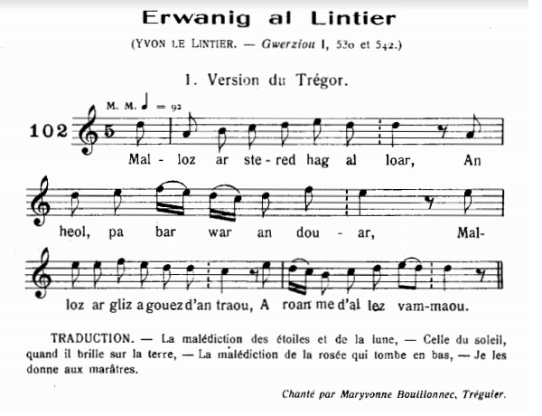
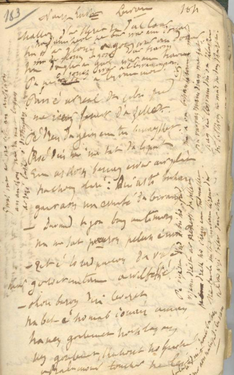
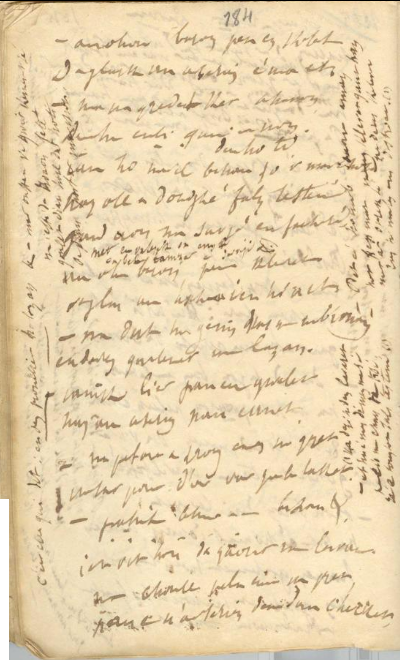
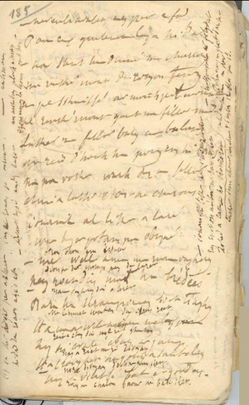
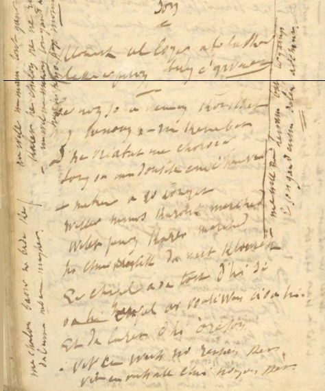

|
A propos de la mélodie Il s'agit d'un chant connu, répertorié dans la classification Malrieu sous le N° M-00180, "Al lez-vamm (Erwanig al Linker)", soit en français "La belle-mère (Yves Le Lintier). Ce dernier titre se réfère aux versions notées par Luzel dans ses "Gwerzioù Breiz-Izel", Tome 1, p. 542-555. Dans "Musiques bretonnes", Maurice Duhamel a publié la mélodie ci-dessus pour ce chant, p.51, chant n°102. Elle est très proche de celle qui accompagne la gwerz "Ar roue Gralon ha Ker Is" d'Olivier Souestre et qui sert de fond sonore à la présente page. On trouvera sur le site tob.kan.bzh d'autres mélodies accompagnant d'autres versions. A propos du texte Page 183 du carnet N°2, ce chant est intitulé par La Villemarqué "Naïk Lukaz - Lezvamm". Le rapprochement avec la gwerz Annaïk Lukaz", p 112 (Malrieu M-00217) du même carnet est naturel: on y voit le personnage central sur qui pèse un lourd grief, arrêté par les gendarmes, à la demande de sa famille et le récit s'achève par la pendaison à laquelle, il échappe in extremis grâce à l'intervention d'un allié puissant. Si ce n'est que le héros de l'histoire est une héroïne, et qu'il s'agit non pas de patricide mais d'infanticide. Quant au deuxième titre "Lezvamm", la marâtre, il se justifie par le rôle essentiel joué dans l'intrigue par ce personnage dont la méchanceté est également évoquée au début de certains des chants appartenant au type M-00731,"Ar plac'h he daou bried" (La femme aux deux maris). |
About the tune This is a well-known song, listed in the Malrieu classification under the number M-00180, as "Al lez-vamm (Erwanig al Linker)", or in English "The Stepmother (Yves Le Lintier). The latter title refers to the versions recorded by Luzel in his "Gwerzioù Breiz-Izel", Book 1, p. 542-555. In his songbook "Breton Music", Maurice Duhamel published the above tune for this song, p.51, under N ° 102. It is very close to that which accompanies the gwerz "Ar roue Gralon ha Ker Is" by Olivier Souestre. It serves as background sound for this page. Other melodies accompanying other versions can be found on the tob.kan.bzh site. About the text On page 183 of notebook N ° 2, this song is titled by La Villemarqué "Naik Lukaz - Lezvamm". The connection with the gwerz "Annaïk Lukaz" (Malrieu M-00217) on p 112 of the same notebook is but natural, since both feature a central character on whom hangs suspicion of crime, who is arrested by the constables at the request of his family and the story ends with the hanging from which he escapes at the last minute, thanks to the intervention of a powerful ally. In the present instance, the hero of the story is a heroine, and the investigated crime is not patricide but infanticide. As for the second title "Lezvamm", the stepmother, it is justified by the essential role played in the plot by this character whose wickedness is also mentioned at the beginning of some of the songs of type M-00731, " Ar plac'h he daou bried " (The woman with two husbands). |
|
MANUSCRIT p. 183  p. 184  p. 185  p. 186  |
p.183 Naïk Lukas - LEZVAMM I 1. Malloz d'ar stered ha d'al loar Ha d'an heol pa bar war an douar Ha d'ar glizh a gouez war an douar Ha d'ar glizh a gouez d'an traoñ Ha d'ar glav a gouez war an traoñ, Pa vez o gouez war al lez-vammoù! 2. (Ra gouezo war al lez-vammoù) Gwaz int er vro vit an ankaou, An ankou ne ra 'met lazhan Ar re-se lez da distrujañ. II (Marge droite verticalement) 3. Me a oa bihan ha savet mat Pa varvas mamm digant ma zat Hag ul lez-vamm din oa klasket. Hi biskoazh ma mad 'deus karet. 4. Pa vije 'n dud 'tebriñ o fred, Vijen 'dreñv ar presnestr da zellet Pe dreñv o c'hein en tu bennaket. N'e taolo ma zad askorn krenn din Vel ma vije taolet d'ur c'hi! 4bis. Pan eo ar re all da zebriñ pred Me ya ouzh 'r prenestr da zellet Pe dreñv d'e gein en tu bennaket... 5. Pred din roe ma zad da lipat: Un askorn bennak war ar plad Ha c'hoazh lare: "Den, hasta buhan!" Gant aon na errufe da lezvamm!" (Marge droite, en diagonale) 6. Eñ lare din mont balean Gant aon na empecho 'l lez-vamm. III 7. - Demat ha joa barzh an ti-mañ! Ma zat baron pelec'h ema? - Aet eo ho tad baron da vale 'r goler un tamm a zeblante. 8. - Aotrou baron, din lavarit: Na bet eo ho mab Youenn amañ: En-deus goulennet ho lazhañ. 'Deus goulennet kaout ho puhez, Abalamour touchit e leve!- 9. . An aotrou baron, pa'n-eus klevet (?), Da glevet un testeni c'hoantet: - Pa na gredit ket ac'hanon, Deuit tre en ti, gwir ouiot (?).- (Dans la marge gauche) C'est elle qui dit: 10. - En-deus promitet ho lazhañ. - (&) - Mat ouzhon eo gwir kement-se! Na yefec'h (?) da Anaon feteiz. Goulenn diouzh holl dud ho ti, Ouzhpenn paotr ar marchosi! - 11. [Pa na gredit ket] den ho ti, Lan, ho mevel bihan zo 'r marchosi! -... Hag holl a douge fals-testeni Gant aon na deufe e facheri 12. Holl a douge fals-testeni Gant aon na deufe facheri 'Met ur vatezhig oa en ti A-bell-amzer o servijiñ. 13. - Bet eo ho map Youenn amañ Netra ken mat 'm-eus klevet gantañ ... - Hag ar gevier he-deveus kelennet Gant he matezh oant distroet (1) (1] 14. Ha dezhi he-deus lavaret: - It c'hwi amañ dimeus ma zi! - Honnezh ne ehane ket divrudiñ Re o tougont fals-testeni (1) IV 15. An aotrou baron p' hen klevet, Da glask an archerien zo aet: - Na deuet ha ganin klask ran ambroug: En-defed goulennet am lazhañ. - (Dans la marge gauche, page suivante) (1) 16. N'oa ket e ger peurachuet E dad da Roazhon zo aet. Barzh Roa(zh)on pa arruet: - Demat ha joa, en-deus laret 17. Demat ha joa en ti-mañ! An archer-bras [3] pelec'h emañ? Ezhomm 'm-eus da gaout anezhañ. 18. Youennig Liker pa'z hen gwelet Hag an archerien pa'n erruet - Na petore droug am-eus na graet, Evit bout (?) d'ar vac'h ganto lakaet? 19. - Paotrig bihan, paotrig bihan Ait 'vidomp da gaout ho lavar - Me c'houll hepken debriñ va pred Pan eoc'h, archerien, deuet d'am c'herc'het. V 20. - Neventi ne vank ket avat: Pa 'n-eus goulennet lazhañ e dad. Da stered ha din-me mil malloz! Me rank mont da Roazhon fenoz 21. Na pa skuizfe ar marc'h pep kammed Me rank mont gant ma filhor mat. - Lakait ma filhor, barzh ur valañs Me roy deoc'h e bouez en he lañs 22. - Ma na rofe marc'h du ar filhor Youennik Luker e bouez e chevañs. - Youennik Al Liker a lare War beg ar potañs p'a bigne: (Noté en alternance:); 23. - Me wel amañ ma mamm-vagerez: D-eus roet din meur a bred aes Bara ha krampouez baot diagent Hag [?] avaloù ha per melen... 24. Hag hi o vale e-barzh ar gambr E kerc'henn he goug a dantel[ezh]enn Hag a renkfe bout er gordenn Div pe deir c'homz 'm-eus d'he laret: - Mamm vagerez din a larit: Ma liennad gentañ din c'h-eus roet 26. Roet 'c'h-eus din ma re gentañ Hag a riot ma re ziwezhañ? - Ho re ziwezhañ deoc'h na rin ket Rak ma c'halon baour ne bado ket. 26. Youennik Liker na choarzhit ket Kar evidon evit sur ne ran ket: Ho tad a lakas ho kemeret Lakaet deornp choas kennebeut. 27. - Intron Varia ar Folgoat Petra am-eus graet ken ampart? Hevelep ampartiz m'eus ket Hepken daouzek bloaz on pe trizek! 28. Me wel aze naontek mereuri, Hag an dour a lamm war pep hini, Hag a venn rein d'am magerez Pa ober rae din mad ha pred aes. (marge gauche) 29. Ma c'halon baour ne bado ket Da lammat panevet maget 30. Me wel ma mamm tont gant al lan Kalet he c'halon pa ne rann! Me wel ma maeron 'tont gant a prad Hag hi erruo hep momed 31. - Me wel ma lez-vamm barzh he gampr O son gant un delenn arc'hant. [1] [2] = KLT gant Christian Souchon (c) 2020 |
p.183 Annaïk Lukas - LA MARÂTRE I 1. Malheur à la lune et aux astres Au soleil éclairant la terre A la rosée qui regénère Les monts et le fond des vallées Aux pluies dont la terre est baignée Et malédiction aux marâtres! 2. (Car ce sont des femmes malignes) Qui sont bien pires que l'Ankou Lequel tue les gens et c'est tout, Mais elles, incitent au crime. II (Marge droite verticalement) 3. J'étais heureux étant gamin, Quand tout-à-coup mourut ma mère On m'affubla d'une mégère. Qui jamais ne voulut mon bien. 4. Mes parents déjeunaient, moi point. Je les voyais par la fenêtre. Derrière son dos, est-ce bête! Père m'octroyait en cachette Un os comme on en jette aux chiens. 4 bis.Mes parents étaient à la fête: Je regardais par la fenêtre Espérant recueillir des miettes 5. Mon père en guise de repas: Me réservait quelqu'os du plat En me disant: "Tiens, va-t-en vite!" De peur qu'elle vienne et s'irrite! (Marge droite, en diagonale) 6. Père me disait de partir Craignant fort qu'elle pût sévir. III 7. - Bonjour et joie en ce logis! Mon père serait-il ici? - Le baron est parti plus loin. Il était fâché je crois bien. 8. - Baron, écoutez s'il-vous-plait: Votre fils Yves est passé: Il a menacé (demandé) de vous tuer. Il était d'humeur massacrante Parce que vous touchez sa rente!- Exige d'entendre un témoin: - Si vous ne voulez pas me croire, Nos gens confirmeront l'histoire.- (Dans la marge gauche) C'est elle qui dit: 10. - Il a juré qu'il vous tuerait C'est vrai, croyez-moi! Je le sais. Il vous veut mort et enterré. Demandez à tous nos valets Ou, sinon, au palefrenier, 11. Sinon, demandez, je vous prie, A Lan le valet d'écurie! -... Tous firent de faux témoignages De peur qu'ils n'attisent sa rage. 12. Tous comme un seul homme ont menti, Craignant cette femme méchante, A l'exception d'une servante Entrée depuis longtemps ici: 13. - Yves, vient juste de partir. Pas un mot dont il dût rougir ... -- Ce sont mensonges que professe, Dit la servante, ma maîtresse. -(1) (1] 14. Cette dernière répondit - Sortez donc à l'instant d'ici! - La servante ne cessait point De dénoncer les faux-témoins. (1) IV 15. Le baron, étant convaincu, Chez les gendarmes s'est rendu: - Que mon fils soit emprisonné: Puisqu'il menace de me tuer! - (Dans la marge gauche, page suivante) (1) 16. Il avait dit ces mots, qu'à peine Son père était parti pour Rennes. A Rennes quand il arriva: - Il déclara: - Bonjour et joie! 17. Bonjour et joie à tous, ma foi! Votre grand archer [3] est-il là? J'ai besoin de l'entretenir. 18. Yves Liquer quand il le vit Avec les gendarmes a dit: - Quel crime ai-je commis tantôt Pour que l'on me mette au cachot? 19. Petit garçon, petit garçon, Venez pour la déposition! - Moi je voulais manger mon pain: Quand la maréchaussée survint.. V 20. - Voilà qui n'est point ordinaire:: Un fils demande à tuer son père! Malheur au ciel et à moi-même! Il faut ce soir que j'aille à Rennes 21. Dussé-je dix chevaux crever Mon filleul ce soir je verrai. - . - Qu'on le mette sur la balance Son poids [d'or] je donne en chevance. 22. - Le poids de son cheval en sus? Le Liquer pour vous est perdu!. - Yves Le Liquer déclarait En montant en haut du gibet: (Noté en alternance:); 23. - Je vois ma mère nourricière: Ses collations étaient princières Ce pain, ces crêpes d'autrefois, Pommes et poires de surcroît...- 24. (Arpentant sa chambre, la belle Mère porte un col de dentelle! Une corde lui siérait mieux). De dire encor deux mots ou trois: - Mère-nourrice, c'est étrange: Moi qui vous dois mes premiers langes 26. Je vous prie de m'envelopper Dans ce blanc linceul, les derniers. - Un linceul! La dernière fois! Mon pauvre coeur ne le peut pas!. 26. Yves Liquer, ne riez point Je suis sérieux. Croyez-le bien! Qu'y puis-je? C'est à la requête D'un père que l'on vous arrête.. 27. - Notre-Dame du Folgoët, Quel est ce talent qu'on me prête? Ne croyez pas à ces fadaises Car je n'ai que douze ans ou treize! 28. Dix-neuf fermes qu'on voit d'ici Et l'eau qui les arrose aussi, Moi je les lègue à ma nourrice Source de bonté, de délice. (Marge gauche de la p. 186) 29. Mon coeur ne continuera pas De battre s'il n'est point nourri. 30. Ma mère arrive par l'ajonc Un coeur si dur jamais ne rompt! Ma marraine vient par le pré: Plus qu'un instant pour arriver! 31. - Ma marâtre, elle, chante au son D'un luth (harpe) d'argent dans son salon. [1] [2] = Traduction Christian Souchon (c) 2020 |
p.183 Annaïk Lukas - THE STEP-MOTHER I 1. My curse on the stars and the moon! On the sun lighting up the earth! The dew falling onto the earth! The dew falling in the valleys, On the rains that fall on the plains! And my curse on all stepmothers! 2. (Because they all are bad women) Much worse here than is the "Ankou" Who just does, himself, kill people Whilst they incite others to kill. II (Right margin vertically) 3. I was happy as a kid, But suddenly my mother died I was blessed with a stepmother Who never meant well to me. 4. When my parents were having lunch, I looked at them through the window. Behind her back did somehow My father give me secretly A bone as he would to a dog. 4 bis.When my parents were having lunch: I looked at them through the window Hoping t would collect some crumbs 5. My father gave me as a meal: Some bone that was left on the dish And said to me: Take it, quickly! Lest my stepmother would stop it. (Right margin, diagonal) 6. And my father told me to leave Fearing she would blame it on him. III 7. - Good day and joy to all of you! Tell me, please, is my father here? - The baron, your father has gone. He was a bit angry, I think. 8. - My Lord Baron, listen to me: Your son Yves was here on his way, He clearly threatened (wanted) to kill you. Wanted to take your life away: You get the pension due to him! - Required hearing a witness: - If you don't want to believe me, Just come in, you shall know the truth. - (In the left margin) She is the one who says: 10. - He swore, indeed, he would kill you. It's true, believe me, I know it. Wants you should die this very day. Ask our servants if he said it. Or you may ask the stable groom, 11. If you distrust the house servants Just ask Alan, the stable groom! -... They all gave false testimony Lest she would take revenge on them. 12. They all gave false testimony, As they feared this wicked woman, With the exception of a maid For many years at their service: 13. - Your son Yves was here, it is true But did not say a wicked word - All the lies told by her mistress Were denied by the maidservant. - (1) (1] 14. Now the wicked woman replied - You shall get out of here right now! - Which did not prevent the girl From denouncing false witnesses. (1) IV 15. The baron, being persuaded, It was true, to the gendarmes went: - See that my son be imprisoned: Since he has threatened to kill me! - (In the left margin, next page) (1) 16. He had hardly said these words That his father had left for Rennes. Now in Rennes when he arrived:, He said: - Good day and joy to all! 17. Good day and joy to all of you Tell me, please, where is the sheriff? [3] I need an interview with him. 18. Yves Liquer on seeing his father With the gendarmes has said: - Tell me, what crime did I commit Why did they put me in dungeon? 19. Little boy, little boy, I say Come along and make your statement I was eating my frugal lunch When constables arrested me. V 20. - This is no ordinary thing : Indicted for father's murder! My curse on heaven and myself! Tonight I have to go to Rennes 21. If ten horses die on the way, My godson tonight I shall see. - . - Now, put my godson on the scales Here's his weight [in gold] in exchange. 22. - And if you'd give his horse's weight Your godson's life is forsaken ! - Yves Le Liquer has declared Climbing to the top of the gallows: (Noted alternately :) ; 23. - I see my foster mother there Who used to treat me so kindly With bread and pancakes in times past, Apples and pears in addition ...- 24. Pacing her room, my beautiful Mother wears a fine lace collar! When a rope would suit her better. I shall say two or three more words: - My nurse and mother, it's strange to say: I owe you my first swaddling clothes 26. Now I beg you to wrap me up In my last swaddling clothes, my shroud. - Wrapping you up in a white shroud! But my poor heart would not bear it !. 26. Yves Le Liquer, please, don't laugh I am serious. Rely on it! You're caught at your father's request We had no free choice, believe me 27. - By Our Lady of Folgoët! What skills am I supposed to have? How can you believe this nonsense? Mind you, I'm only twelve or thirteen! 28. Nineteen farms I can see from here As many brooks flowing by them, I bequeath them all to my nurse Who was so good as to feed me. (Left margin of p. 186) 29. My poor heart will not continue To beat if you do not fed it. 30. My mother comes on the gorse way Such a hard heart will never break! My godmother by the meadow: In a moment she shall be here! 31. - My stepmother sings in her room To the sound of a silver harp. [1] [2] = |
|
[1] Le "Yves Le Lintier' de Luzel Voici la note qui clot le tome I des "Gwerzioù" de Luzel (p.556): "Ce gwerz, très épandu dans tout l'arrondissement de Lannion, est un des plus longs de ce genre, et aussi un des plus demandés aux veillées d'hiver. Je doute que la manière dont j'orthographie le nom du principal personnage soit la bonne. Tous les chanteurs que j'ai entendus, et ils sont nombreux, prononçaient invariablement: "Al Lintier" ou "Al Linker"... Je n'ai pu trouver ce nom dans l'histoire de Bretagne, ni dans l'armorial breton...Il est pourtant évident que nous avons affaire ici à une vraie ballade historique, et les noms de Locmaria, du Gage [Déganger], de Rosambo [Rosambeau], de la Rivière qui comptent parmi les plus nobles et les plus illustres familles du pays [noms qui apparaissent dans les diverses versions publiées par Luzel ou sur ses manuscrits, auxquels il faut ajouter la marquise de Guérand], ne permettent aucun doute à cet égard." Ces multiples références onomastiques reflètent une caractéristique de ce chant, les nombreux renvois à d'autres gwerzioù, si bien qu'il fait figure de florilège des clichés qui ont la faveur du public. Pour s'en tenir à la présente version: En revanche la gwerz du carnet 2, ne nomme pas les intervenants (hormis le héros et le garçon d'écurie, Lan), mais évoque des liens de parenté: la marâtre, le père, le fils, le filleul, le parrain, sans oublier la nourrice qui semble être aussi la marraine d'Yves (str 30). [2] Le prénom Yves Le nom du héros varie d'une version à l'autre: "Nom d'homme. - Léonard: Eüzen, Euzen, Eauzen [qu'on écrit aujourd'hui "Eozen"]. - Trégorrois: Erouan, Youen; - Bas-Cornouaillais: Youen, Erouan [qu'on écrit aujourd'hui "Erwan"]; - Haut-Cornouaillais: Even, Eouan [qu'on écrit aujourd'hui "Ewen"], Ezan, Ezen, Een; - Vannetais: Eouan [. qu'on écrit aujourd'hui: "Ewan"]. Saint-Yves, recteur, official [juge], Patron du diocèse de Tréguier et des Capucins de Bretagne [ordre auquel appartient le Père Grégoire]: Sant Eauzen, Sant Erouan a Viryone [qu'on écrirait aujourd'hui "Sant Erwan a Wirionez"= Saint Yves de la Vérité], Sant Even, etc." Bien qu' Yves soit considéré comme le prénom breton par excellence, ce nom apparaît d'abord dans la littérature dans les vieux romans français ainsi qu "Yvon" qui était le cas-régime d'Yve (cas sujet), comme Guyon est celui de Guy. Les documents anciens montrent que le nom masculin "Yves" fut employé d'abord dans le Nord et le Nord-Ouest de la France. Il y eut un "Ivo", évêque de Chartres, dès la fin du XIème siècle. Il était né dans le Beauvaisis. Ce n'est qu'un siècle plus tard, que le rayonnement d'Yves Hélory (Saint Yves, 1253 - 1303), juge ecclésiastique célèbre par sa bonté, avocat des pauvres et des deshérités répandra ce prénom en Bretagne. Un dicton latin affirmait une chose étonnante pour le peuple de l'époque (seulement?): "Sanctus Yvo erat Brito, Advocatus et non latro". On devine la traduction "Saint Yves était Breton, bien qu'avocat ce ne fut pas un voleur!" L'origine de ce prénom est une racine germanique qui désigne l'if (Allemand "Eibe") et qui existait également dans les langues celtiques dont le gaulois, d'où sa présence dans notre langue et dans la langue bretonne (ivin[enn]). C'est sans doute parce que son bois servait à confectionner les arcs, que le nom de l'arbre finit par désigner l'arme, puis celui qui en était porteur, l'"archer". D'autres essences ont connu la même évolution sémantique en allemand. Des prénoms incorporant l'élémént "asca" désignant la "lance" ou "linde" désignant le "bouclier", renvoient à des formes anciennes de "Esche" et "Linde" qui signifient respectivement "frêne" et "tilleul", arbres qui fournissaient la matière première pour ces équipements. On peut se demander si les nombreuses formes relevées par le Père Grégoire, - et l'on pourrait en ajouter bien d'autres (Ifig, Von, formes féminines, diminutifs...) -, procèdent toutes du français "Yves". Le roman de Chrétien de Troyes, "Yvain", qui a certainement également contribué à répandre ce prénom, répondait au gallois "Owein". C'était peut-être une forme irlandaise d'"Eugène", à moins qu'il ne s'agisse d'"Eoghan", un dérivé de "Og" qui signifie "jeune". Le prénom germanique "Eudes" peut aussi avoir interféré avec "Yves". [3] An Archer-bras Cf. Les jeunes hommes de Plouyé, l'Archer de Quimper". |
[1] Luzel's "Yves Le Lintier ' Here is the note which closes Volume I of Luzel's "Gwerzioù" (p.556): "This gwerz, widely spread throughout the Lannion district, is one of the longest of its kind, and a great favourite at winter evenings. I am not sure of the spelling of the main character's name. All the singers I heard so far, and they are numerous, invariably pronounced: "Al Lintier" or "Al Linker" ... I could find this name neither in the history of Brittany, nor in the Breton armorial ... It is however obvious that this is a genuine historical ballad, and the names Locmaria, Gage [Déganger], Rosambo [Rosambeau], de la Rivière, which are among the noblest and most illustrious families in the country [names which appear in various versions published by Luzel or in his manuscripts, to which the song "Marquise de Guérand" should be added], leave no room for doubt in this regard. " These manyfold name references echo a characteristic of this song: the many borrowings from other gwerzioù resulting in making it a catalogue of popular clichés that are popular. We find for instance in the present version: swapping a prisoner for his weight in gold: "Lakait XY barzh ur valañs / Me roy deoc'h e bouez e chevañs" = "Put XY in a scale / I will give you its weight in" chevance "(valuable materials, str . 21). To be exhaustive, we must not forget the curse on the moon and the stars in the first stanza, which also intoduce the "Lads of Plouyé", which we can suspect to be a borrowing ascribable to the collector himself. On the other hand, the gwerz in Notebook 2, does not name the protagonists (apart from the hero and the stable boy, Lan), but mentions family ties: the stepmother, the father, the son, the godson, the godfather, not to forget the nanny who seems to be also Yves' godmother (str 30). [2] The first name Yves The name of the hero varies from version to version: "Man's name. - Léon dialect: Eüzen, Euzen, Eauzen [we now write "Eozen"]. - Tréguier dialedt: Erouan, Youen; - Lower-Quimper dialect: Youen, Erouan [we now write "Erwan"]; - Upper-Quimper dialect: Even, Eouan [we now write "Ewen"], Ezan, Ezen, Een; - Vannes dialect: Eouan [. we now write: "Ewan"]. Saint-Yves, rector, official [judge], Patron saint of the diocese of Tréguier and of the Capuchins of Brittany [to which Father Grégoire belongs]: Sant Eauzen, Sant Erouan a Viryone [which would be written today "Sant Erwan a Wirionez "= Saint Yves of Truth], Sant Even, etc." Although Yves is considered the Breton first name par excellence, this name first appears in the literature in old French novels, as well as "Yvon" (which was the case-regime of the subject case "Yves", as "Guyon" is the case-regime of "Guy". Ancient documents show that the male name "Yves" was first used in the North and North-West of France. There was an "Ivo", bishop of Chartres, from the end of the 11th century. He was born in Beauvaisis. It was not until a century later that the influence of Yves Hélory (Saint Yves, 1253 - 1303), an ecclesiastical judge famous for his kindness, advocate for the poor and the underprivileged, spread this first name in Brittany. A Latin saying asserted an astonishing thing for the people of the time (only for them?): "Sanctus Yvo erat Brito, Advocatus and not latro ". The translation is easy: "Saint Yves was a Breton, although a lawyer he was not a thief!" The origin of this first name is a Germanic root applying to the yew tree (German "Eibe"), which also existed in Celtic languages ??including Gallic. Hence its presence in both the French ("if") and the Breton language ("ivin[enn"]). It is undoubtedly because its wood was used to make the bows, that the name of the tree ends up designating first the weapon, then the fighter who carried it, the "archer". Other essences underwent the same semantic shift in German. Names incorporating the element "asca" referring to a "spear", or "linde" referring to a "shield", point to old forms of "Esche" and "Linde", meaning respectively "ash" and "lime". These trees supplied the raw material for these weapons. One can wonder if all the many forms identified by Father Grégoire - to which many others could be added (Ifig, Von, feminine forms, diminutives ...) - come from the French "Yves". The title of Chrétien de Troyes' novel, "Yvain", which certainly also helped spread the name, translated the Welsh "Owein". Perhaps it was an Irish form of "Eugene", unless it was "Eoghan", a derivative of "Og" which means "young". The Germanic first name "Eudes" may also have interfered with "Yves". [3] An Archer-arm See The young men of Plouyé , paragraph "The Archer of Quimper ". |